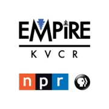
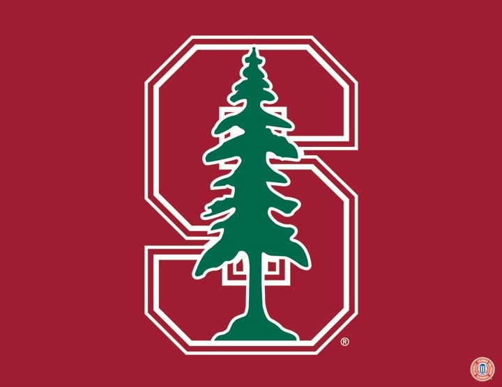

EXPERIENCE
Howard Center for Investigative Journalism
Reporter | 2020
- Investigating evictions from public housing across the U.S.
- Working with a team of 20+ journalists to sensitively interview tenants facing eviction.
- Summer story featured in The Washington Post, The New York Times and other news outlets.
CNN
Assistant Producer | 2019 - 2020
- Pitched, produced, edited & published 160 videos, yielding over 24 million views to CNN.com.
- Wrote 55 articles in trending stories and news recaps for CNN.com.
The Telegraph, India
Reporting Intern | 2018 - 2019
- Wrote 17 feature stories for eastern India’s largest circulation English newspaper.
- Reported on art shows, music festivals, restaurant openings and nightlife.

NPR San Bernardino, 91.1 FM
News Intern | 2018
- Produced local stories across comedy, pyrotechnics, cannabis church and doctor shortages.
- Reported on an apartment shooting, which became the station’s top news spot of the week.

Stanford University
Research Fellow | 2018
- Profiled urban, suburban and rural poverty with the Center on Poverty & Inequality.
- Conducted 20 field interviews with tenants in California suburbs and rural desert communities.
Brookings Institution
Research Intern | 2017 - 2018
- Reviewed 40 initiatives in education & workforce development with the Metropolitan Policy Program.
- Recommended opportunities for skill-based careers in low-income communities.

Johns Hopkins University
Field Interviewer | 2016 - 2018
- Researched displacement and neighborhood change with the Poverty & Inequality Research Lab.
- Conducted 50 interviews with tenants from public housing authorities in Baltimore.
EDUCATION
University of Maryland
Master’s in Journalism | Expected 2022
- Receiving the program’s top merit-based scholarship.
- Taking courses on Photojournalism, Public Affairs Reporting, Journalism Law and Ethics, and Interactive Design and Development.
Johns Hopkins University
Bachelor of Arts in Sociology | 2014 - 2018
- Bachelor of Arts in Sociology, Minor in Social Policy, 3.5 GPA.
- Awarded by Residential Life for Outstanding Commitment to Diversity and Inclusion.
SKILLS
icon
Bengali & Spanish
icon
Field interviewing
icon
DSLR and iPhone photography
icon
Data analysis with Adobe Analytics
icon
Video editing with Adobe Premiere
icon
Photo editing with Adobe Lightroom
icon
Writing & Reporting
icon
News site programming
icon
Digital audience testing